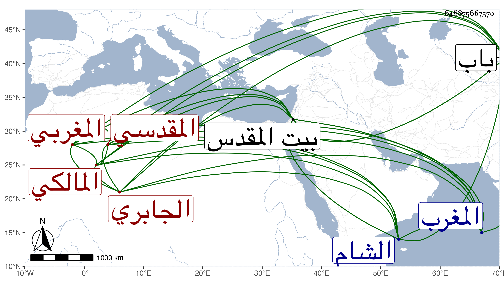

0902Sakhawi.DawLamic.ITO20230111-ara1.EIS1600.648875667570
Biography ID: 648875667570
35
محمد بن عبد الرحمن المدعو خليفة بن مسعود بن محمد بن موسى الشمس أبو عبد الله المغربي الجابري نسبة لبني جابر قبيلة من المغرب المقدسي المالكي ويعرف بابن خليفة . ولد في حادي عشر رمضان سنة إحدى وثمانمائة ببيت المقدس ونشأ به فحفظ القرآن عند الفقيه عبد الله البسكري وتلاه على علي ابن اللفت وحسن العجلوني وحفظ غالب الرسالة وقرأ فيها على حسن الدرعي المالكي ، وأخذ التصوف عن والده وسمع الحديث على محمد بن سعيد إمام الدركاة ، وولي مشيخة المغاربة ببيت المقدس وكذا مشيخة الفقراء المنتسبين لأبي مدين والمدرسة السلامة والتوقيت بالمسجد الأقصى مع تصدير فيه ، ولقيته هناك فقرأت عليه المسلسل ونسخة إبراهيم بن سعد بسماعه لهما على محمد بن سعيد أنا الميدومي وتبرأ بحضرتي مما ينسب لأبيه من انتحال مقالة ابن عربي مع كونه ليس في عداد من يفهم بل كان مسمتا نير الشيبة جميل الهيئة شديد السمرة كثير التلاوة ، حج غير مرة ودخل الشام . مات في ليلة الخميس منتصف جمادى الثانية سنة تسع وثمانين ودفن بمقبرة باب الله بحوش الموصلي بجوار أبيه .
